I recently got my hands on an old unserviceable aircraft transponder from my flying club. The tinkerer me was obviously very curious on what’s inside this piece of equipment. What better way to find out then to do a teardown!
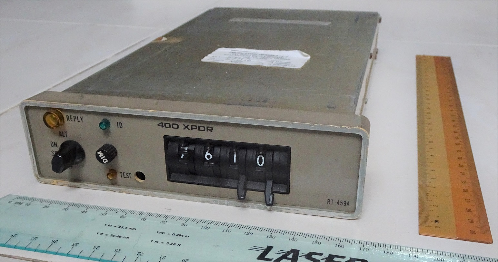Aircraft Radio Corporation (ARC) RT-459A
Approximate size: 16.5cm x 29cm x 4.5cm
Background info
Before going to the teardown, it is helpful to provide some information as I know not every reader has a background in aviation.
Air traffic control (ATC) has to use to know the position of every aircraft in the area of its responsibility in order to manage or advice the air traffic. Without any special equipment, ATC has to rely on pilots to report their position. In fact, in some areas of the world, relying on pilot position reports is still the case!
There are many problems with this approach as pilots can sometimes report their position incorrectly or not even be in communication at the right frequency with the ATC facility in charge of that area.
Here is where radar come in
Radar actually stands for Radio Detection and Ranging. I didn’t know Radar is an acronym until a few years after I first encountered that term as a kid.
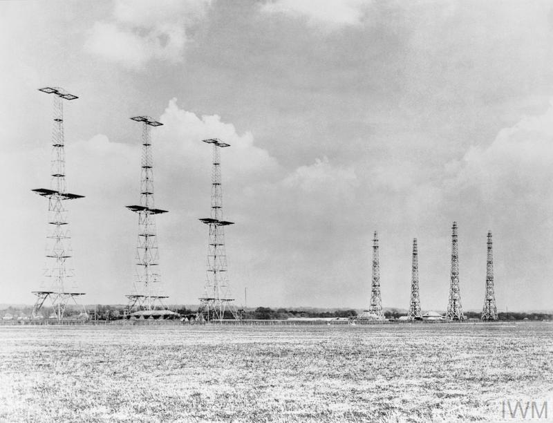Chain Home radar deployed in Britain in 1940 to detect incoming German planes. Source
Radar came into more widespread practical use during WW2 as a means to detect enemy aircraft in advance so the defenders have sufficient time to prepare and know the position to intercept the threat.
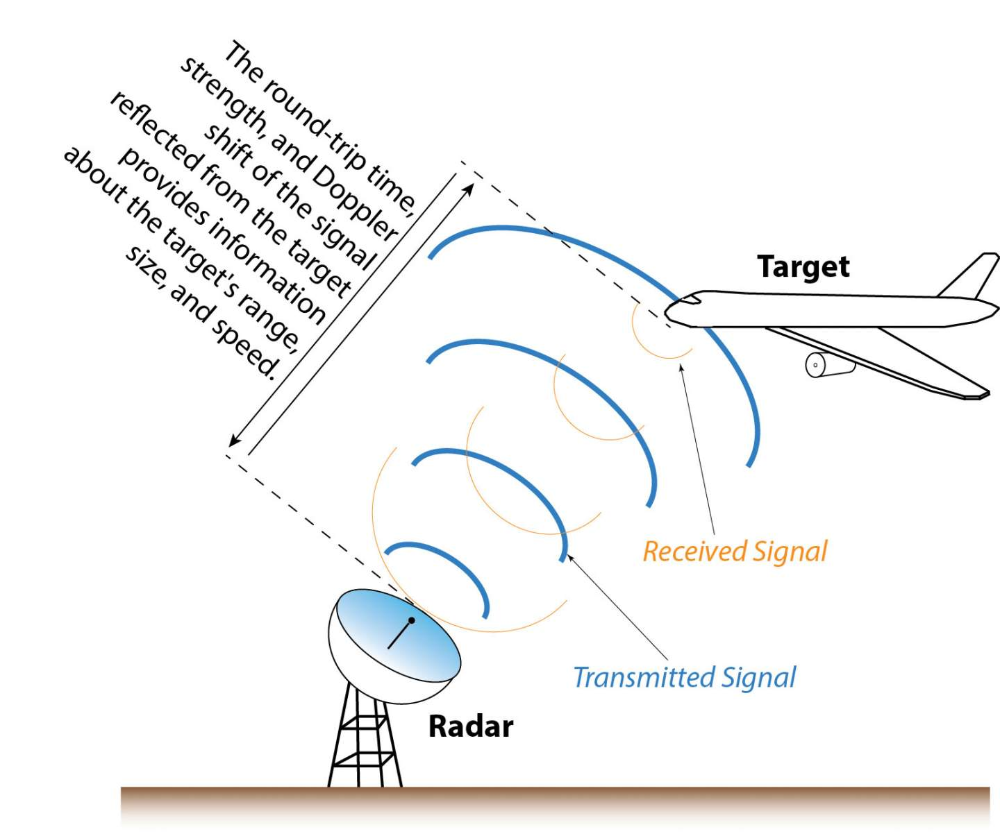The basic concept is to basically emit radio waves and analyse the properties of the returned echo.
Based on the direction of the emitted wave, speed of light and the time delay between the pulse and echo, radar can determine the azimuth and distance of the remote object with respect to the radar station. Extra information like size and speed can also be determined.
This approach is called Primary Surveillance Radar (PSR).
Limitations of PSR
1. Range
The PSR has to emit very powerful radio waves in order for the wave to have sufficient energy to reach the distant object and bounce back to be source.
This is the equation I researched into when it comes into calculating power density of a transmitted wave from a directional antenna in a cone of solid angle.
$P(R) = \frac{G_tP_t}{4\pi R^2}$
$P(R)$: Power Density at a distance R away from transmitter$P_t$: Transmit Power$G_t$: Antenna Gain
Simplifying the above equation, we can therefore see the waves’ power decays with respect to the inverse square law. $\rho \propto \frac{1}{R^2}$
However, that is just a one way transmission. The PSR requires that the radar waves be reflected off the target object back the source.
The amount of power that will be reflected by the distance object is given with this value
$(RCS)\frac{G_tP_t}{4\pi R^2}$
- RCS is short for Radar Cross Section in
$m^2$
The returned wave will decay at $\frac{1}{4\pi R^2}$ due to isotropic spreading. The following equation is thus the power that will be received back at the source.
$P(Reflected) = (RCS) \frac{G_tP_t}{4\pi R^2} * \frac{1}{4\pi R^2}$
->
$P(Reflected) = (RCS) \frac{G_tP_t}{(4\pi)^2 R^4}$
This shows that the signal decreases in power with the distance R to the target in the 4th power.
Source: Principles of Avionics (4th Edition) and https://en.wikipedia.org/wiki/Radar_cross-section
Emission of powerful radio waves makes the radar more expensive to build and it could be a health hazard to people nearby.
2. Identity
For a controller manning a PSR station, every aircraft in range of the station will appear as just anonymous dots on the screen. There is no way to easily tell the dots apart. What planes are those? How do I know the plane I’m talking to is associated to which dot?
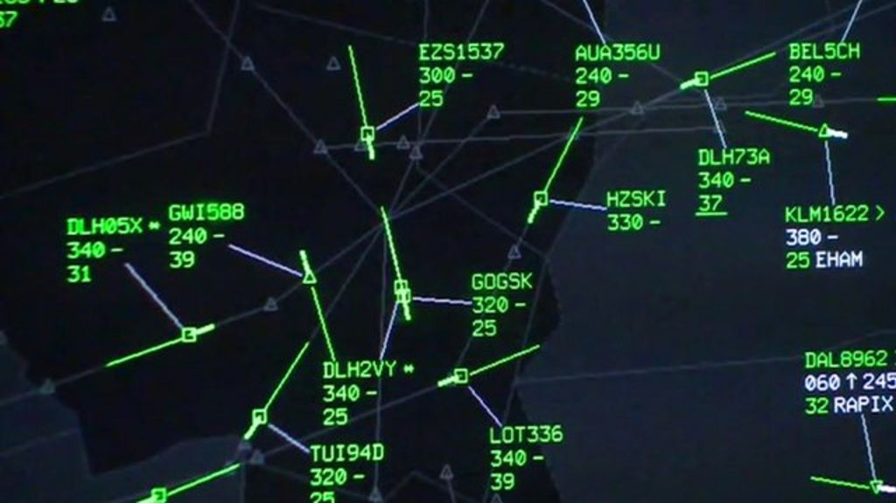In this case, every dot has some form of identification, direction, callsign, groundspeed and altitude.
3. Altitude
Most civilian PSR do not have elevation information so they can only produce a 2D picture of radar returns in the area. Reading this Stackexchange post, the limitation is due to cost. Military radars have the elevation function as the defence budget has “less of an issue” with money.
Unlike ground-based vehicles, aircraft operate in a 3D environment.
It is entirely possible for 2 dots to overlap safely if only because the planes are at different altitudes. Yet it is also possible that they ARE at the same altitude which pose a collision risk.
Certain airspaces also have altitude restrictions, say at certain altitudes you cannot fly at certain speed or need special permission to enter or just plain disallowed altogether.
ATC therefore needs the altitude information.
Transponder to the rescue
The transponder (TRANSmitter-resPONDER) was invented to tackle the above 3 problems. Aviation authorities worldwide mandate planes have to be installed with a transponder in order to fly into certain airspaces. A radar system that uses transponders is called Secondary Surveillance Radar (SSR).
1. Solving the range problem
When the transponder receives a signal from a radar station at 1030Mhz, it will reply back at 1090Mhz after a 3us delay. The delay allows time for the transponder to process the signal.
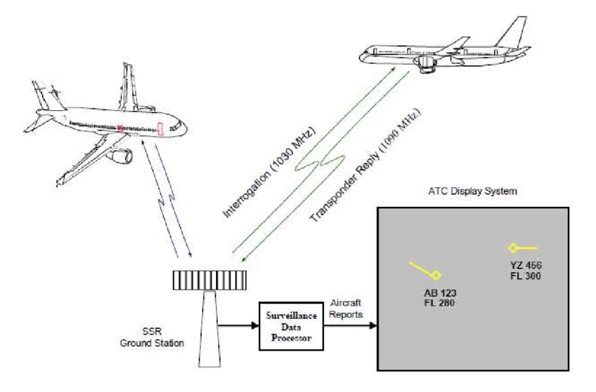The returning wave will now be generated by the aircraft instead of having powerful radio waves reflected back to the source.
2. Solving the identity problem (Mode A)
Since the transponder is sending a return signal back, let’s put it to good use. A special code can be embedded in the return signal to identify the aircraft to the radar station.
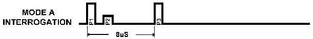When the transponder receives a special Pulse signal (P1/P3) of 2us length and 8us pulse separation, it will reply back a 4-digit octal identification code. This is called a squawk code.
The weaker P2 pulse is sent as a form of sidelobe suppression to enable the transponder to determine if the P1 pulse is a genuine signal or signal leakage. More information can be found here
This is called interrogation Mode A.
3. Solving the altitude problem (Mode C)
When the transponder receives a special signal of 21us pulse separation, it will reply back the altitude information.
This is called interrogation Mode C.
The radar station alternates between Mode A and Mode C interrogation modes at regular intervals.
Transponder replies
Regardless of Mode A or Mode C, the transponder reply is always in the same format.
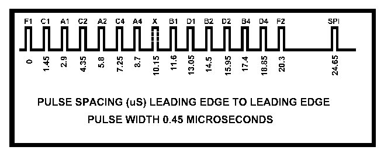- F1: Frame start bit to indicate transmission start
- F2: Frame end bit to indicate transmission end
- X: Unused bit
- SPI (Special Purpose Identification): To indicate pressing of ident button
- A/B/C/D (1,2,4): Squawk code or altitude data
Look up this table to see the what altitude/squawk code corresponds to what values of A/B/C/D (1,2,4).
Basically the 12 transmission slots between F1 and F2 is used to transmit the 12 data bits in Gillham code which is similar to Gray Code.
Transponder failure
Here is a video snippet of my solo flight when my transponder failed. It seems my aircraft is now invisible to Paya Lebar Approach which is the ATC facility in charge of that area. Paya Lebar Approach is manned by military controllers so I’m unsure why they did not have PSR to identify me.
External inspection
So now with all the dry theoretical information let’s come down to the hardware.
Front view and explanation
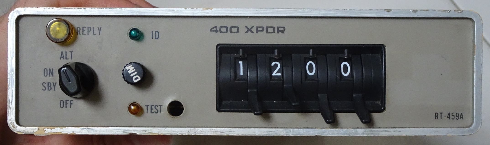- OFF - Turns transponder off
- SBY - Transponder on standby. Usually set on the ground after engine start to give time for device to warmup.
- ON - Only replies to Mode A interrogation. Should not be used in the air but I usually set to this mode on the ground.
- ALT - Replies to both Mode A and C interrogation. Set here just before takeoff.
- Reply Lamp: Indicate transponder is replying
- Dim - Adjust brightness of reply lamp
- ID - Push button to send an SPI signal which will cause a flash on the ATC screen. Only done when instructed by ATC if they have problems locating the plane.
This transponder is currently set to squawk 1200 which is the standard squawk code used by aircraft flying by Visual Flight Rules in Singapore, USA, etc.
Rear view and explanation
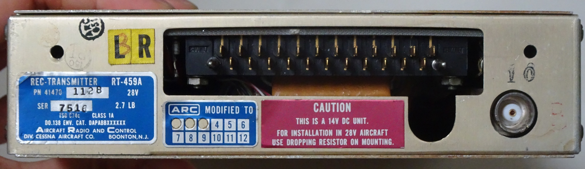At the back of the unit, we have a 23-pin connector and a coaxial connector for connecting to an antenna outside the plane.
Given the age of this unit, usage and maintenance manuals are difficult to locate online. However I did manage to locate this image based on a similar unit.
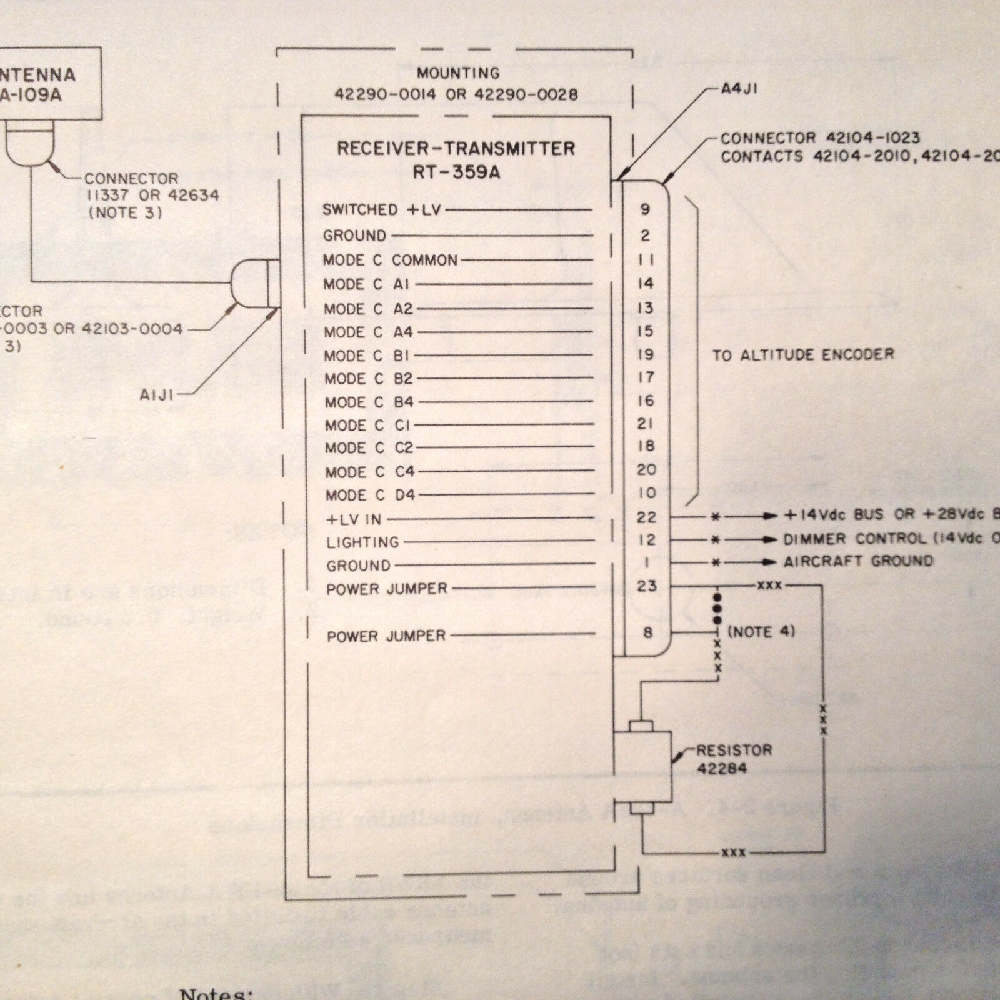The 23-pin connector is meant for connecting to an external altitude encoder. An external altimeter will measure the current pressure altitude, encodes the data into Gillham Code format and supply it to the transponder. The transponder will then relay this data during a Mode C interrogation.
Teardown
So now let’s finally crack open the device and look inside! Given the lack of schematic documentation of such an old design and with my personal lack of experience on RF electronics, I can only make guesses of the components used and their functions.
First impressions
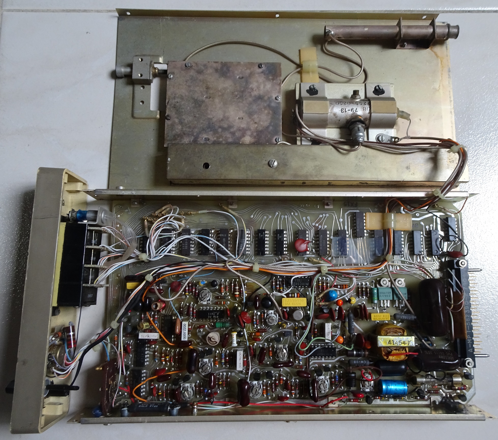Everything is based on through-hole components! Not a single surface-mount component which is indicative of a device designed at least many decades ago.
I also noticed that there is no single processing core, everything is done by individual chips in stages.
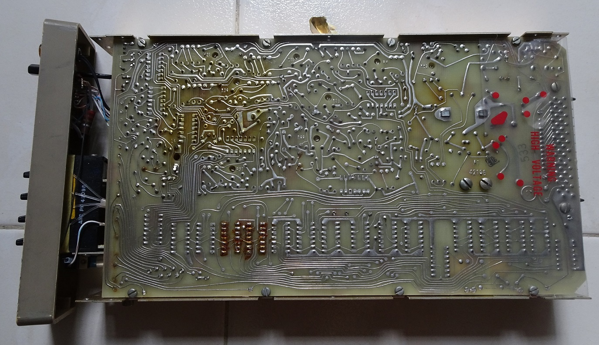To drill home further the age of the device, we can see the PCB traces are all designed by hand before the age of Electronic Design Automation (EDA) software in the early 1980s.
Antenna portion
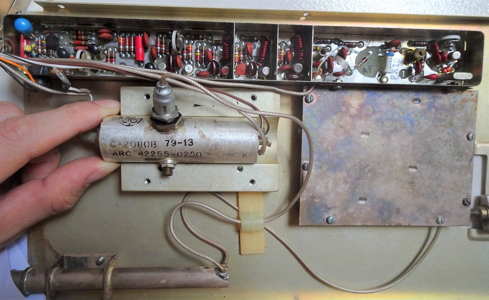I suspect the components in the rectangular top section are low-pass filters. The red spring-looking inductors as well as the resistors and capacitors beside them. They help to filter out any unwanted higher frequencies above the 1030 Mhz from the radar station.
I can’t identify what the large cyclindrical component is although it’s likely a likely a tube amplifier. It is connected directly to the coaxial output. The logo is that of General Electric. Googling the values “C-2080B” and “ARC 42255-0250” don’t turn up anything meaningful.
The 79-13 code suggests a 1979 Week 13 manufacturing date.
Opening the square cover on the side produces this. It’s likely a duplexer (T/R switch) to isolate the transmitter and receiver portion.
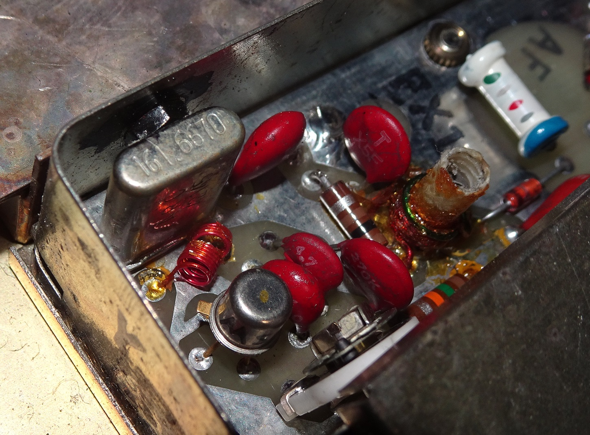There is a crystal of frequency 161.6670 Mhz. It seems like a very odd frequency so I did some multiplier calculations. Multiplying 161.667 by 6 gives an almost round number of 970.002 Mhz. Googling 970 Mhz gave me this diagram.
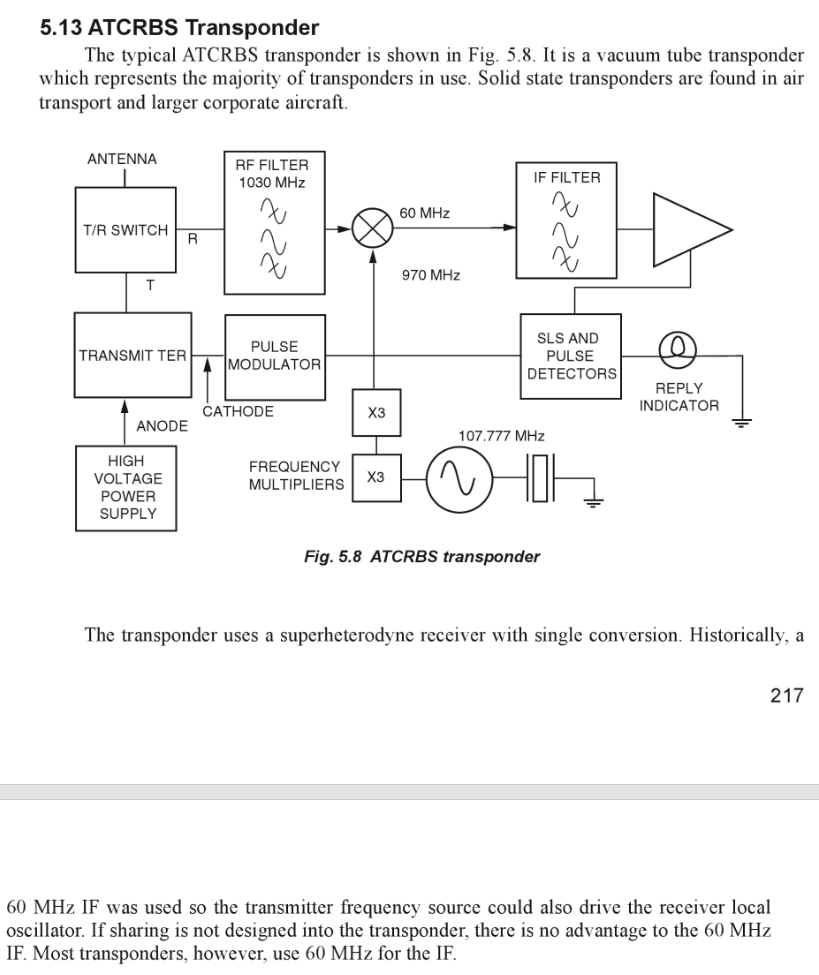The frequency in this diagram is 107.77 Mhz with 2 x3 multipliers. I’m guessing the multipliers in this RT-459A is a x2 and x3 multiplier.
With the 970Mhz, the input 1030Mhz is shifted to 60 Mhz which is easier for the subsequent electronics to process. I’m no RF person so this is as much as I understand it.
High voltage power supply
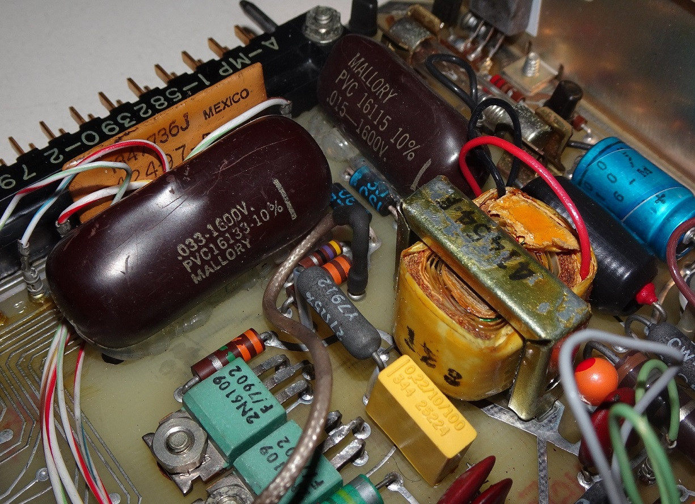The first indication that high-voltage is being used is the 1600V written on those gigantic brown capacitors. They are at 0.033uF and 0.015uF. The yellow coil beside them should be the step-up transformer although googling “41454f” produces no meaningful results.
According to the diagram, high voltage is used to power the transmission tube amplifier.
Trimpots
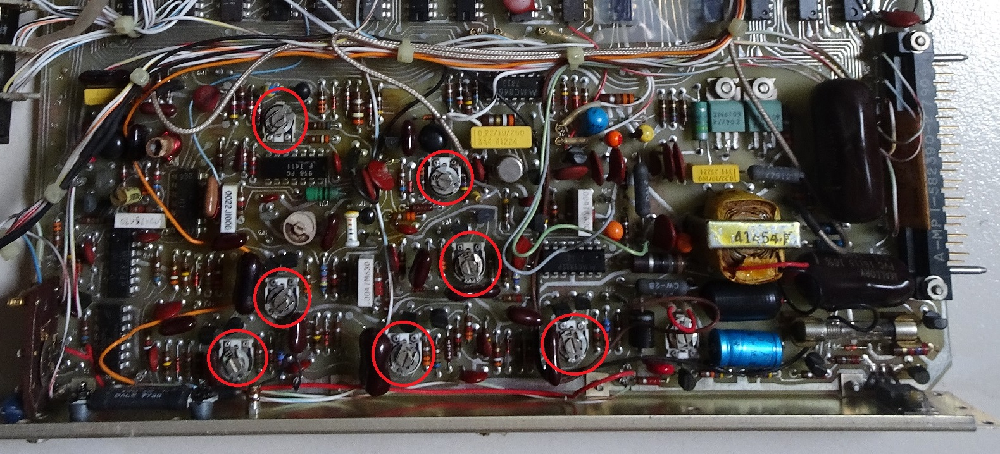I noticed many trimpots used. I measured the resistance while turning them and confirmed they are trimpots. Probably for post-manufacturing calibration or maintenance tuning.
Plenty of NAND chips
I found many similar ICs on the board.
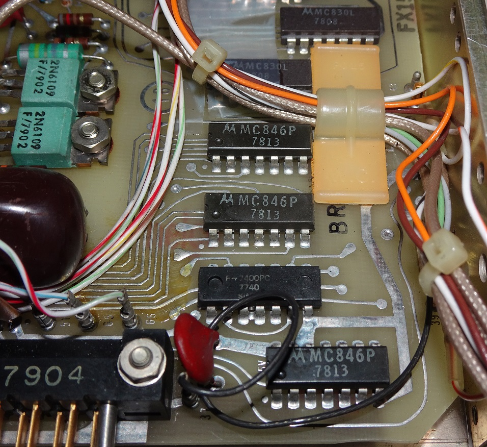Names like the following:
- Motorola MC846P
- Motorola MC830L
- Fairchild F7400PC
- TI SN15830N
Googling says they are long obsolete NAND gate chips.
Following the PCB traces from these chips indicates that the pilot-facing squawk code switches and altitude encoder pins are connected to them. No wonder there are so many of them.
But as to why the NAND logic, I really have no idea. According to the comments I received, it’s because NAND gates are the most universal of gates and can be used to built any number of gates and decide whether to use a particular input bit.
Conclusion
With my almost non-existent RF knowledge, I did my best effort to try to understand how this transponder works. Given the age of this equipment, there was hardly any user documentation, maintenance manual much less a schematic I can use to work on. The components are so old that even component markings are useless.
Nevertheless, writing this blog post especially the theory portion has increased my knowledge on how the aviation radar system works. Amazing to think people have thought of and implemented this so many decades ago.
It also shows the snail’s pace in the improvement of aviation technology where equipment built so long ago still can function usefully today unlike our rapidly obsolete modern technology like computers and smartphones.
Many thanks to Seletar Flying Club for giving me this old transponder to play with! Now if only I can do a teardown of the equipment behind those ultra-modern glass cockpits. It’ll probably be more interesting but those are probably too expensive to just dissect and analyse.
Edit (24 June 2020): I made some changes to this post due to new information suggested by others.
Online presentation I gave of this topic at Hackware.


{kind=link}
{kind=link}
{kind=link}
{kind=link}
{kind=link}
{kind=link}
{kind=link}
{kind=link}
{kind=link}
{kind=link}
{kind=link}
{kind=link}
{kind=link}
{kind=link}
{kind=link}
{kind=link}
{kind=link}
{kind=link}
{kind=link}
{kind=link}
{kind=link}